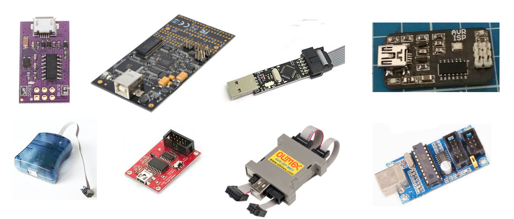

Programación de Micros AVR en Linux

Carga del programa
Grabar programa en la memoria Flash
Comunicación ISP
Existen distintas formas de conectar y programar un microcontrolador AVR, la más común es mediante el puerto ISP (In-circuit Serial Programmer) el cual consiste en 6 pines: GND, VCC, RST, MOSI, MISO y SCK. Este conector está disponible en versión de 6 y 10 pines.
Programadores ISP
En el mercado existen una gran variedad de programadores para AVR, tanto los oficiales de la empresa Atmel como otros desarrollados por empresas o la comunidad Open Source
Conexión ISP
La conexión del programador se realiza mediante el puerto SPI (MISO, MOSI y SCK), el pin RESET y la alimentación (VCC y GND)
Cargar el .hex en el AVR
Para grabar el programa compilado dentro de la memoria Flash desde un proyecto creado con APOS, se ejecuta el comando make flash.
$ make flash
Grabar los fusibles
Para grabar los fusbiles definidos a la hora de crear el proyecto con APOS, se ejecuta el comando make fuse.
$ make fuse
Grabar los fusibles y el .hex
Para grabar tanto los fusbiles como el programa ejecutable se utiliza el comando make install.
$ make install
Borra el chip AVR
Para borrar la memoria flash y la memoria EEPROM se utiliza el comando make erase.
$ make erase
Hacer RESET en el AVR
Para generar un RESET del programa grabado en la memoria Flash del micro, se utiliza el comando make reset.
$ make reset
Siguiente capítulo
Puertos E/S de los AVR
Ir al capitulo 4